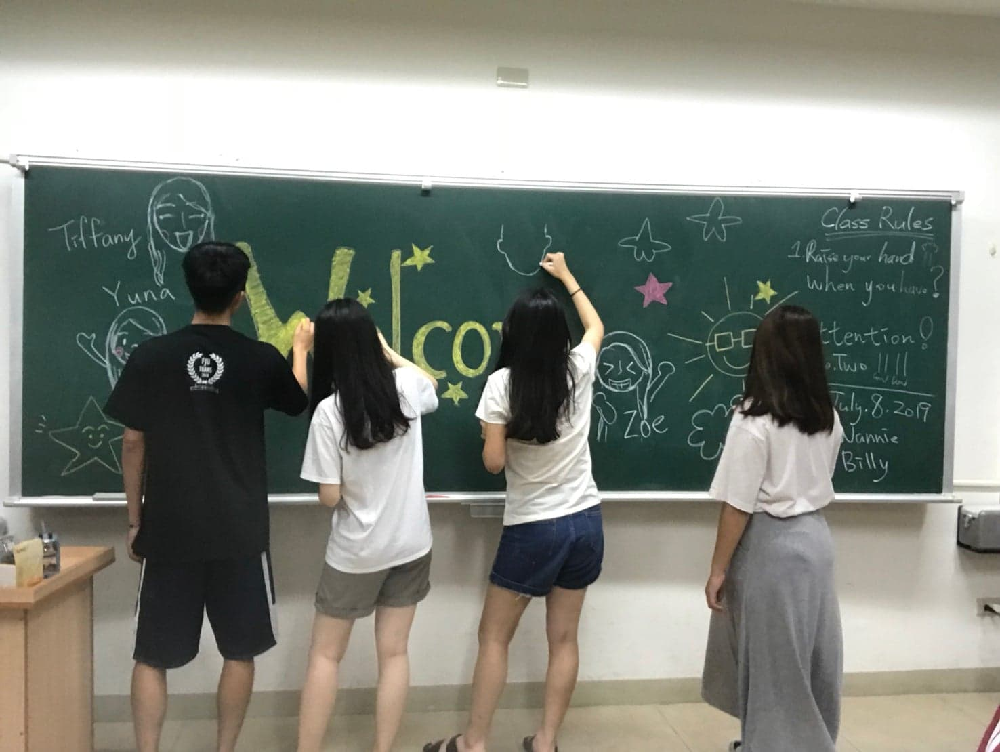

In 2019, I joined a summer camp called ” 2K19 NTUST x Project LET’S GO! Summer program in Taiwan” for one month. It’s a service-learning summer camp, so college students from Taiwan, Southeast Asia, Japan, Mexico and Europe were recruited to become volunteer teachers to hold an international bilingual summer camp in Siaolin Village, Kaohsiung. The whole month was divided into three parts. The first part was “teacher training” for volunteer teachers. For the second and third parts, we had two sections summer camp for elementary school students, and each section took five days. Except for Siaolin elementary school students, all student participants from Kaohsiung city could also join in, because we aimed for people to see the beauty of Siaolin village. For me, it was an unforgettable month! I met lots of interesting people, and created colorful memories with them.
In the first week of the summer camp, all of the volunteer teachers united and had a week-long training in National Taiwan University of Science and Technology (NTUST). Lots of work had to be done during the training. We each had to design a five-day course in the morning, and different activities for the afternoon and evening time. The theme of the camp was "universe" and we had to integrate it into four subjects, which were Science, Art, Music and English. I was in the Music group. After our discussion within the period of five days, we designed to teach the “eight planets” and tempo, which was for English and music learning respectively. Therefore, first we adapted the lyrics of cup song “Cup”, sung by Anna Kendrick. The adaption was with the vocabulary of eight planets: Mercury, Venus, Earth, Mars, Jupiter, Saturn, Uranus, and Neptune in the lyrics. And then in summer camp, students had to learn how to sing the song and the accompaniment, the “cup game” for its percussion, together. These comprised our courses arrangement. In addition, for the afternoon and evening schedule, we had some interesting activities like stargazing or barbecue. It was a special experience staying with the people you just met that day for twenty four hours and actively discussing with them. It forced me to open my mind quickly even though I was a shy person.
On the fourth day of the teacher instruction, we had to go to different sightseeing spots and completed some tasks in Taipei city for a whole day as a group, which included foreign volunteer teachers in every group. It was interesting to show those famous spots to them, or to see them eat those special Taiwan snacks, such as stinky tofu or century egg. This activity impressed me a lot.
On the weekend of the first week, we took a long trip to Siaolin Village. I was amazed by the fantastic scenery of nature there. The mountain was surrounded by the cloud, and the air was pure. We visited the “Siaolin Memorial Park” next day. When I saw the names of people who died due to the landslide resulted from Typhoon Morakot, I couldn't help but feel mournful. Shown there were the evidences of some living people who died immediately because of the accident. What’s more miserable was when the docent pointed out one name, and said “this was my son”. At that moment, I had much fierce sorrow, because I suddenly realized that death was so close to us.

Then, students of first section came! Actually, I felt a little nervous at first, because I hadn’t gotten along with so many children before that. I feared that I couldn’t catch what they wanted to share, or I had no interesting topic to chat with them. However, my partners helped me a lot so I became relaxed.
The most memorable experience for me was to teach them how to play the cup song. Before that camp, I didn’t know how to play it, but I learned it with my partners because we had to demonstrate. Actually, it was not that easy to do it. I got a sense of achievement after I made it! Then, when all of the six teachers played it together, the feeling doubled. I still can remember the night that we practiced it in the classroom and successfully achieved at the end. I loved it. However, it was a totally different circumstance when we taught children. Some of them have already learned it before, but some had two left feet when they had to sing and play the cups at the same time. Therefore, we spent lots of time to practice with them because we needed to perform in front of the children’s parents at the end of the camp. However, when they finally did a great job during the performance, I felt so touched and relieved.
In addition to the theme classes taught indoors, we also had outdoor activities, such as water polo, visitation of Siaolin Pingpu Cultural Museum. I had a very good time with the children, and was impressed by the unsophisticated heart of kids. They easily fought for some petty thing, yet then became friends effortlessly. In a nutshell, we had fascinating memories with the children in the first section.
Nevertheless, the second section had to be stopped on the third day because there was a typhoon around Taiwan. It was sad to say goodbye to those children and the beautiful place.
The experience that summer was the best I've ever had. I encountered a group of friendly and interesting people, and I learned a lot from them. We had very good cooperation. I appreciated our effort to accomplish the camp. I haven’t stayed with people from different countries for so long, so it was a new experience. Besides, I also benefited from the children. They made me laugh out loud, and was also emotionally touched by them. I gained lots of invaluable memories. Moreover, I found myself become more open-minded after that camp. I also trusted myself more. All in all, it affected me in many ways. I hope I could take the lessons I learned and help more people in the future!